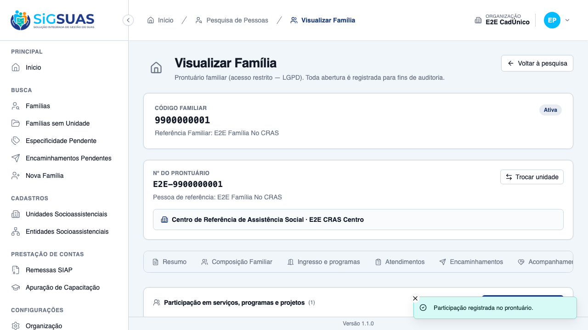
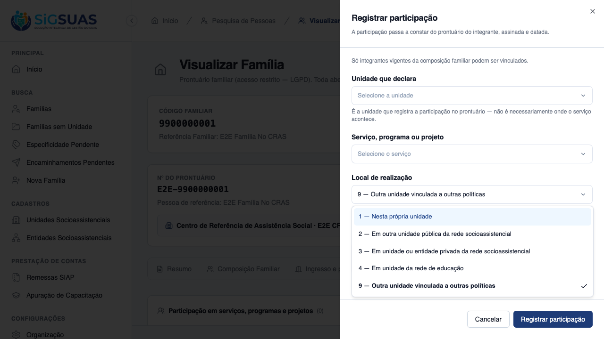
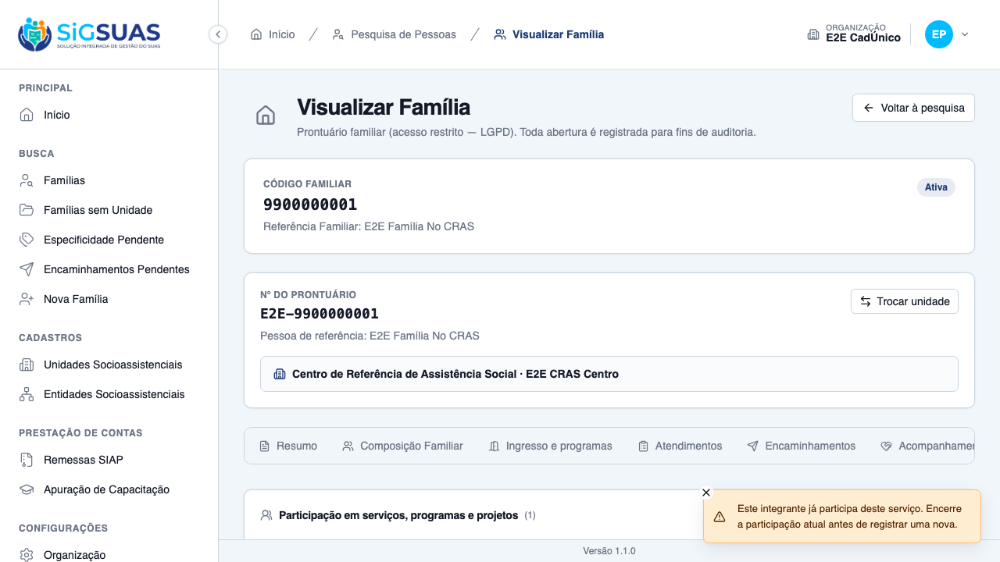
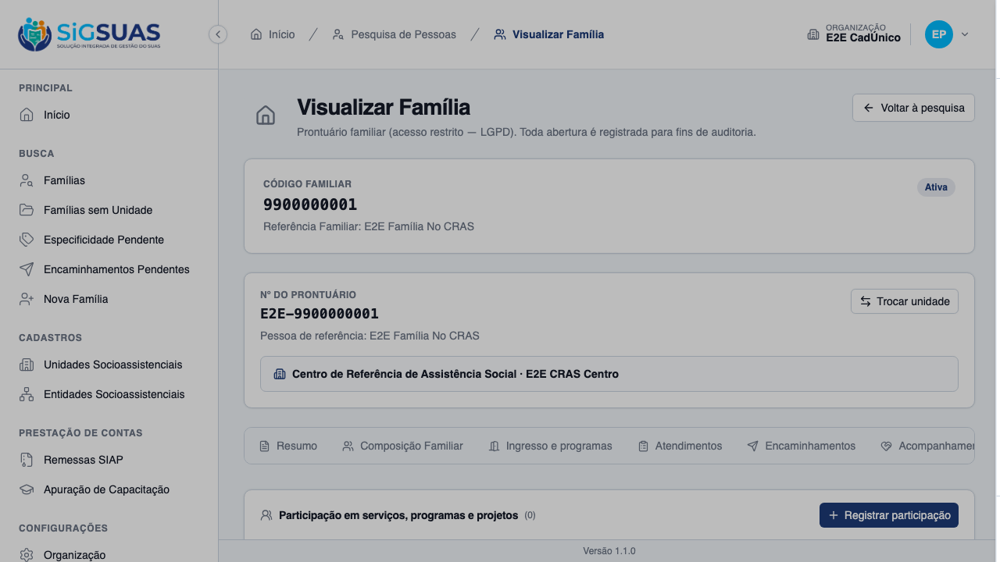
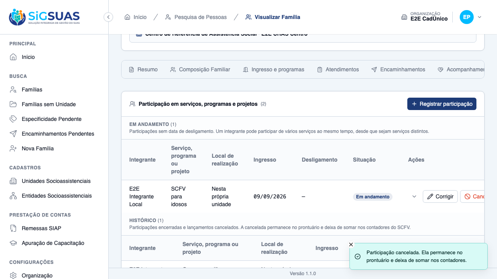
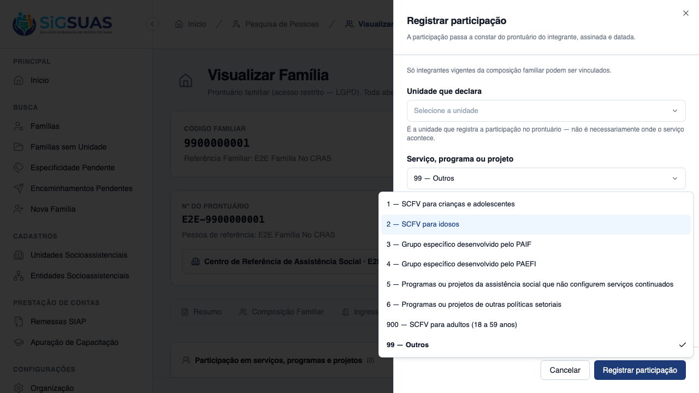

Quinze critérios de aceite. Nove evidenciados no navegador (CA01, CA02, CA03, CA04, CA06, CA07, CA09, CA11 e CA15, com oito prints) e seis cobertos pela suíte automatizada (CA05, CA08, CA10, CA12, CA13 e CA14). A suíte fecha com 176 testes e 954 asserções no filtro Participation e 93 no isolamento entre municípios; os 33 cenários Playwright do arquivo do prontuário — cobrindo as cinco histórias das fases F3 e F4 — passam contra base recém-semeada. Nenhum critério em falha e nenhum defeito de produto encontrado: o código de produção ficou intocado pela suíte.
| CA | Critério | Situação | Evidência |
|---|---|---|---|
| CA01 | Registrar participação em SCFV (happy path) | ATENDIDO | Print + Pest |
| CA02 | Local fora da unidade pede identificação | ATENDIDO | Print + Pest |
| CA03 | Local na própria unidade não pede identificação | ATENDIDO | Print + Pest |
| CA04 | Pessoa precisa ser integrante da família | ATENDIDO | Print + Pest |
| CA05 | Participação em andamento | ATENDIDO (SUITE) | Pest |
| CA06 | Duas participações vigentes no mesmo serviço são recusadas | ATENDIDO | Print + Pest |
| CA07 | Participação simultânea em serviços diferentes | ATENDIDO | Print + Pest |
| CA08 | Reingresso após desligamento | ATENDIDO (SUITE) | Pest |
| CA09 | Data futura recusada | ATENDIDO | Print + Pest |
| CA10 | Retroativo em período já declarado | ATENDIDO (SUITE) | Pest |
| CA11 | Cancelar em vez de excluir | ATENDIDO | Print + Pest |
| CA12 | Acesso pela unidade que acompanha | ATENDIDO (SUITE) | Pest |
| CA13 | Negativa declara o motivo | ATENDIDO (SUITE) | Pest |
| CA14 | Isolamento entre municípios | ATENDIDO (SUITE) | Pest (TenantIsolation) |
| CA15 | Item “Outros” exige descrição | ATENDIDO | Print + Pest |
Dado que sou Operacional com add-on LGPD, lotado no CRAS Centro, quando registro a participação de uma integrante no SCFV para idosos realizado nesta própria unidade, então a participação é salva e consta como em andamento, com meu nome e a data do lançamento.
data-status.
Quando informo um local que não é a própria unidade e tento salvar sem identificar onde acontece, então o registro não é salvo e o sistema pede o nome e o contato do local.
is_own_unit do lookup, nunca o código literal.
Quando registro participação realizada nesta própria unidade, então o campo de identificação do local não é exigido.
Quando tento escolher alguém que não integra a composição vigente, então o registro não é salvo.
Sem prova visual: critério verificado pela suíte automatizada (ver anexo).
Dado que registrei sem data de desligamento, então ela consta como em andamento e continuará contando nos meses seguintes.
ended_on.Sem prova visual: critério verificado pela suíte automatizada (ver anexo).
Dado que a integrante já tem participação vigente no SCFV para idosos, quando tento registrar outra no mesmo serviço, então o registro é recusado e o sistema indica a participação existente.

Quando registro a mesma pessoa também em um grupo do PAIF, então as duas são salvas e ambas constam como em andamento.
Dado um adolescente desligado, quando registro novo ingresso, então uma nova participação é criada e a anterior permanece no histórico.
Sem prova visual: critério verificado pela suíte automatizada (ver anexo).
Quando informo data de ingresso posterior a hoje, então o registro não é salvo.
max igual a hoje.error_code — o Form Request corta antes da Action. A guarda com código estável existe e foi coberta por chamada direta à Action.
Dado que a remessa daquele mês já foi gerada, quando registro participação retroativa, então ela é salva e o sistema avisa que a remessa precisa ser gerada novamente.
Sem prova visual: critério verificado pela suíte automatizada (ver anexo).
Quando cancelo informando o motivo, então a participação permanece visível marcada como cancelada e deixa de contar.
delete() — o DELETE HTTP mapeia para cancelar.
Dado que sou Operacional do CREAS, que acompanha a família referenciada no CRAS, quando registro participação, então é permitido e a participação pertence ao CREAS.
Sem prova visual: critério verificado pela suíte automatizada (ver anexo).
Quando tento registrar para família fora do meu alcance, então não é permitido e a tela informa o motivo, sem nomear as unidades envolvidas.
Sem prova visual: critério verificado pela suíte automatizada (ver anexo).
Quando alcanço família ou participação de outro município, então recebo 404.
Sem prova visual: critério verificado pela suíte automatizada (ver anexo).
Quando escolho o serviço de código 99 e salvo sem descrição, então o registro é recusado.
requires_description — atributo do lookup, não código literal.
A suíte de 61 testes não precisou tocar em código de produção. Além disso, o executor fez um teste de mutação: removeu temporariamente o carimbo do contexto do leitor no request do container, confirmou que o teste de regressão falha sem ele, e reverteu no mesmo comando. Isso prova que a proteção contra o defeito da fase anterior — can_edit/can_cancel sempre falsos na listagem — está de fato ativa, e não apenas passando por acaso.
error_code: o Form Request corta antes da Action. As guardas com código estável existem e foram cobertas por chamada direta.ended_on futura reusa a constante de started_on_in_future.store com ended_on grava ended direto, sem passar por active.O guard de "item em uso não é excluído" daquela história havia sido escrito tolerante à ausência desta tabela. Ao criá-la, o teste-sonda quebrou — terceira ocorrência desse padrão no projeto. Foi investigado antes de mudar: o serviço não mudou de comportamento, só o mundo mudou. A asserção vazia foi trocada por dois testes reais (conta uso de verdade; conta também cancelada e soft-deletada). Com isso o CA08 da US-SCFV-01 deixa de ser vacuamente verdadeiro.
A linha expandida mostra "Unidade que declara" de propósito: é participação que este profissional pode ver, e escondê-la dele não protegeria ninguém. O que não pode vazar é a unidade na recusa — e essa asserção foi feita onde a regra vive, no corpo do 409, não no texto da tela.
PASS Tests\Unit\Models\SocialEntityTest
✓ it has suasParticipationType relationship 0.01s
PASS Tests\Unit\Models\SuasParticipationTypeTest
✓ it has correct fillable attributes 0.01s
✓ it defaults is_active to true
✓ it casts is_active to boolean
✓ it uses soft deletes
✓ it uses HasUuid trait
✓ it uses LogsActivity trait
✓ it defines socialEntities relationship as HasMany
✓ it configures activity log with name suas_participation_type and dirty-only logging
PASS Tests\Unit\ParticipationDomainsSeedTest
✓ it semeia exatamente os oito servicos do bloco 16, na ordem do inst… 0.41s
✓ it semeia cada servico com o nome e os atributos exatos da matriz d… 0.02s
✓ it semeia cada servico com o nome e os atributos exatos da matriz d… 0.03s
✓ it semeia cada servico com o nome e os atributos exatos da matriz d… 0.02s
✓ it semeia cada servico com o nome e os atributos exatos da matriz d… 0.02s
✓ it semeia cada servico com o nome e os atributos exatos da matriz d… 0.02s
✓ it semeia cada servico com o nome e os atributos exatos da matriz d… 0.02s
✓ it semeia cada servico com o nome e os atributos exatos da matriz d… 0.02s
✓ it semeia cada servico com o nome e os atributos exatos da matriz d… 0.02s
✓ it semeia exatamente os cinco locais de realizacao, com os codigos… 0.02s
✓ it semeia cada local com o nome e o is_own_unit exatos da matriz do… 0.02s
✓ it semeia cada local com o nome e o is_own_unit exatos da matriz do… 0.02s
✓ it semeia cada local com o nome e o is_own_unit exatos da matriz do… 0.02s
✓ it semeia cada local com o nome e o is_own_unit exatos da matriz do… 0.02s
✓ it semeia cada local com o nome e o is_own_unit exatos da matriz do… 0.02s
✓ it marca is_own_unit em exatamente um local — o codigo 1 (RN05/§4.2… 0.02s
✓ it marca counts_as_scfv_elderly em exatamente um servico — o codigo… 0.02s
✓ it respeita a invariante elderly ⟹ scfv ⟹ group em todas as linhas 0.02s
✓ it marca requires_description em exatamente um servico — o codigo 9… 0.03s
✓ it preserva o salto 6 → 99 e marca is_instrument_extension so no 90… 0.02s
✓ it preserva o salto 4 → 9 dos locais (D05/RN05) 0.02s
✓ it e idempotente: rodar duas vezes nao duplica nem renumera 0.02s
✓ it nao sobrescreve a inativacao feita pelo Administrador 0.02s
✓ it nao tem tenant_id em nenhuma das duas tabelas — sao lookups glob… 0.01s
✓ it nao aplica BelongsToTenant nos dois Models 0.01s
✓ it aplica LogsActivity nos dois Models e audita os tres atributos d… 0.01s
PASS Tests\Unit\ParticipationInvariantTest
✓ it accepts the THREE legal state combinations 0.05s
✓ it REFUSES an active row carrying end or cancellation columns with… 0.02s
✓ it REFUSES an active row carrying end or cancellation columns with… 0.02s
✓ it REFUSES an active row carrying end or cancellation columns with… 0.02s
✓ it REFUSES an ended row without date or carrying cancellation with… 0.03s
✓ it REFUSES an ended row without date or carrying cancellation with… 0.02s
✓ it REFUSES a cancelled row without timestamp, without reason or car… 0.02s
✓ it REFUSES a cancelled row without timestamp, without reason or car… 0.02s
✓ it REFUSES a cancelled row without timestamp, without reason or car… 0.02s
✓ it REFUSES a cancelled row without timestamp, without reason or car… 0.02s
✓ it publishes the invariant as a PRODUCTION contract shared by the t… 0.02s
✓ it lets the PARTIAL UNIQUE INDEX refuse a second ACTIVE row for the… 0.02s
✓ it vigia a PESSOA no SERVICO, nao a unidade declarante (RN07) 0.03s
✓ it lets DIFFERENT services for the same member live side by side (R… 0.02s
✓ it lets the index accept a NEW active row when the previous one is… 0.02s
✓ it scopes the unique index BY TENANT — the same member+service in a… 0.02s
✓ it keeps free-text columns OUT of the activity log (RN10/D11) 0.02s
PASS Tests\Unit\ParticipationServiceInvariantTest
✓ it nao tem nenhuma linha violando elderly ⟹ scfv ⟹ group 0.02s
✓ it mantem a invariante item a item nos oito servicos 0.02s
✓ it reserva o contador de idosos a exatamente um servico 0.02s
✓ it declara family_member_participations como consumidora dos dois d… 0.02s
✓ it conta o uso de verdade agora que a tabela de participacoes exist… 0.03s
✓ it conta tambem participacao cancelada e soft-deletada (RN07 · §7.3… 0.03s
✓ it conta o uso pela coluna declarada assim que a tabela consumidora… 0.02s
PASS Tests\Unit\Services\Siap\SiapDomainMapTest
✓ it collapses the four SUAS participation types into the three of SIAP
PASS Tests\Feature\Api\Relationals\SuasParticipationTypeControllerTest
✓ it lists only active suas participation types 0.05s
✓ it returns up to 30 participation types and flags searchable above… 0.03s
✓ it exposes only id, name and code 0.01s
✓ it filters by search on name (case-insensitive) 0.02s
✓ it filters by search on code 0.02s
✓ it rejects unauthenticated request with 401 0.01s
✓ it rejects search shorter than 2 characters 0.02s
✓ it accepts requests from the client guard 0.01s
✓ it caches the active participation type set 0.01s
✓ it invalidates the cache when a participation type is created 0.02s
✓ it invalidates the cache on bulk deactivate 0.02s
✓ it drops a participation type from the cached set when it becomes i… 0.01s
PASS Tests\Feature\Api\SocialEntityControllerTest
✓ it CA02: store requires all mandatory SIAP layout fields with ('sua… 0.04s
PASS Tests\Feature\Api\SuasParticipationTypeControllerTest
✓ it lists suas participation types 0.02s
✓ it creates a suas participation type 0.02s
✓ it shows a suas participation type 0.02s
✓ it updates a suas participation type 0.02s
✓ it deletes a suas participation type 0.02s
✓ it validates required fields on create 0.01s
✓ it requires authentication 0.01s
✓ it filters suas participation types by name 0.02s
✓ it sorts suas participation types by code 0.02s
✓ it blocks deletion when participation type is linked to a social en… 0.02s
✓ it allows deletion after social entity link is removed 0.02s
✓ it exposes is_active and defaults to true on create 0.02s
✓ it filters suas participation types by is_active 0.02s
✓ it bulk activates suas participation types 0.02s
✓ it bulk deactivates suas participation types 0.02s
✓ it forbids bulk activate without the bulk-update permission 0.02s
✓ it validates uuids on bulk activate 0.02s
✓ it rejects integer ids on bulk activate 0.02s
PASS Tests\Feature\Client\FamilyMemberParticipationTest
✓ it registers the member participation in the elderly SCFV, signed a… 0.07s
✓ it REQUIRES location_description when the location is NOT the own u… 0.06s
✓ it ACCEPTS the same location once the description is given (CA02/RN… 0.05s
✓ it does NOT require location_description when the location IS the o… 0.06s
✓ it DROPS a location_description sent for an own-unit location — the… 0.05s
✓ it REQUIRES other_description when the service requires it (CA15/D0… 0.06s
✓ it DROPS an other_description sent for a service that does NOT requ… 0.05s
✓ it REFUSES a person outside the CURRENT composition (CA04/RN02) 0.06s
✓ it REFUSES an integrant of ANOTHER family of the same tenant (RN02) 0.06s
✓ it carries the member_not_in_family error_code in the ACTION guard… 0.05s
✓ it keeps the participation ONGOING while there is no ended_on (CA05… 0.06s
✓ it records an ALREADY CLOSED period as ended when ended_on comes al… 0.06s
✓ it REFUSES an ended_on BEFORE the started_on (RN05) 0.05s
✓ it REFUSES a SECOND active participation in the SAME service, point… 0.06s
✓ it REFUSES the second active participation even when ANOTHER unit d… 0.05s
✓ it lets a CANCELLED or ENDED participation NOT block a new one in t… 0.06s
✓ it lets the SAME member participate in DIFFERENT services at once (… 0.07s
✓ it creates a NEW participation on re-entry, leaving the previous on… 0.06s
✓ it REFUSES a started_on in the future and creates nothing (CA09/RN0… 0.06s
✓ it carries the started_on_in_future error_code in the ACTION guard… 0.04s
✓ it saves a RETROACTIVE participation in a remitted month AND return… 0.06s
✓ it does NOT warn when the month remittance is pending or failed (CA… 0.11s
✓ it warns BEFORE the submit, in the OPTIONS of a remitted month (CA1… 0.07s
✓ it CANCELS with a reason instead of deleting — the row stays, marke… 0.09s
✓ it REQUIRES a reason to cancel (RN10) 0.08s
✓ it answers 409 IDEMPOTENT when cancelling an ALREADY cancelled part… 0.07s
✓ it REFUSES to cancel an ENDED participation — the period is fixed b… 0.07s
✓ it NEVER deletes: no route drops a row and no source calls delete()… 0.06s
✓ it NEVER logs the cancel_reason in the activity trail (RN10/D11) 0.07s
✓ it lets the ACCOMPANYING unit register, stamping the participation… 0.07s
✓ it REFUSES to declare through a unit where the professional has NO… 0.05s
✓ it evaluates the unit eligibility ON THE DATE of the entry, not tod… 0.06s
✓ it DENIES the whole participation surface for a family of ANOTHER u… 0.07s
✓ it does NOT let FOLLOWING one family authorize participation on ANO… 0.07s
✓ it keeps social_unit_id as a SNAPSHOT when the family reference uni… 0.06s
✓ it KEEPS listing a participation whose service or location was late… 0.08s
✓ it REFUSES status, created_by, updated_by, cancelled_by and cancel_… 0.06s
✓ it REFUSES status, created_by, updated_by, cancelled_by and cancel_… 0.05s
✓ it REFUSES status, created_by, updated_by, cancelled_by and cancel_… 0.05s
✓ it REFUSES status, created_by, updated_by, cancelled_by and cancel_… 0.06s
✓ it REFUSES status, created_by, updated_by, cancelled_by and cancel_… 0.05s
✓ it REFUSES status, created_by, updated_by, cancelled_by and cancel_… 0.06s
✓ it REFUSES status, created_by, updated_by, cancelled_by and cancel_… 0.05s
✓ it REFUSES status, created_by, updated_by, cancelled_by and cancel_… 0.06s
✓ it REFUSES the same forbidden fields on UPDATE, keeping the author… 0.06s
✓ it EDITS an active participation, restamping updated_by and preserv… 0.07s
✓ it CLOSES the period by editing, turning the participation into end… 0.07s
✓ it REFUSES to edit a CANCELLED participation (RN09) 0.06s
✓ it REFUSES an edit that would create a SECOND active participation… 0.07s
✓ it serves the form options with members, units and the two catalogs… 0.05s
✓ it shows the ALREADY ACTIVE participations in the options, so the f… 0.07s
✓ it says WHY the form should not be offered, with a stable code (§7.… 0.07s
✓ it stamps can_edit/can_cancel in the LISTING for whoever is assigne… 0.06s
✓ it withholds can_edit/can_cancel and the cancel_reason from a reade… 0.08s
✓ it filters the block by member and by status without hiding anythin… 0.08s
PASS Tests\Feature\Manager\ParticipationDomainsTest
✓ it lista os oito servicos com os codigos do instrumento e preserva… 0.04s
✓ it nunca expoe o id no payload dos dominios de participacao 0.03s
✓ it identifica o SCFV para adultos como extensao do produto, e so el… 0.02s
✓ it expoe os atributos de contagem de cada servico conforme a matriz… 0.03s
✓ it marca o contador de idosos em exatamente um servico — o codigo 2 0.02s
✓ it recusa marcar um segundo servico com o contador de idosos 0.03s
✓ it recusa a combinacao que viola elderly ⟹ scfv ⟹ group na criacao 0.03s
✓ it recusa desligar o grupo de um servico que continua contando como… 0.02s
✓ it cria um servico proprio do Administrador respeitando a invariant… 0.02s
✓ it aceita servico sem apelido e recusa apelido acima de 30 caracter… 0.03s
✓ it recusa renumerar o codigo de um servico, mas aceita o reenvio do… 0.03s
✓ it recusa renumerar o codigo de um local de realizacao 0.03s
✓ it lista os cinco locais com os codigos do instrumento e so o 1 com… 0.03s
✓ it nao registra nenhuma rota de escrita dos dominios de participaca… 0.02s
✓ it nao oferece escrita ao guard client, mas mantem a leitura das du… 0.04s
✓ it colhe exatamente as cinco abilities de cada dominio de participa… 0.05s
✓ it recusa excluir um servico ja usado em participacoes, orientando… 0.02s
✓ it recusa excluir um local ja usado em participacoes, orientando a… 0.03s
✓ it exclui um item sem uso, porque a lista e aberta e o engano preci… 0.03s
✓ it mantem o item inativado na lista e no historico, tirando-o so do… 0.03s
✓ it mantem o local inativado na lista completa e fora do select de a… 0.03s
✓ it audita a alteracao de um atributo de contagem com autor, data e… 0.02s
✓ it audita a alteracao do local de realizacao com o valor anterior d… 0.02s
✓ it deixa o Operacional Global consultar, mas nao manter, os dominio… 0.04s
PASS Tests\Feature\TenantIsolation\ParticipationIsolationTest
✓ it answers 404 — never 403 — for a family of ANOTHER tenant, on ALL… 0.07s
✓ it never leaks a participation of ANOTHER tenant through MY family… 0.05s
✓ it answers 404 when the participation belongs to ANOTHER family of… 0.06s
✓ it scopes the Model by tenant_id even without the route (BelongsToT… 0.05s
✓ it blocks the request when the X-Tenant-UUID points at a tenant the… 0.05s
✓ it does NOT let a participation of ANOTHER tenant block a registrat… 0.06s
Tests: 176 passed (954 assertions)
Duration: 7.06s[globalSetup] Rate-limiter cache do Laravel zerado. Running 33 tests using 2 workers ✓ 2 [setup] › tests/auth.setup.ts:10:6 › autentica super admin (UI) e propaga cookies para o api-client (1.6s) [tenant-auth.setup] sessão de tenant pronta em /Users/binho/Projetos/esuas-all/e2e/.auth/tenant.json ✓ 1 [setup] › tests/tenant-auth.setup.ts:82:6 › autentica usuário do tenant (client) e propaga cookies para o api-client (1.9s) ✓ 3 [chromium-tenant] › tests/client/family-follow-up.spec.ts:222:7 › US-ACOMP-02 — acompanhamento familiar no prontuário (client) › (g) família nunca acompanhada mostra o estado vazio do bloco (6.5s) ✓ 4 [chromium-tenant] › tests/client/family-follow-up.spec.ts:245:7 › US-ACOMP-02 — acompanhamento familiar no prontuário (client) › (b) num CRAS o select oferece só o PAIF — o PAEFI não é ofertado (7.3s) ✓ 5 [chromium-tenant] › tests/client/family-follow-up.spec.ts:263:7 › US-ACOMP-02 — acompanhamento familiar no prontuário (client) › (d) data futura é barrada no próprio formulário (7.9s) ✓ 6 [chromium-tenant] › tests/client/family-follow-up.spec.ts:291:7 › US-ACOMP-02 — acompanhamento familiar no prontuário (client) › (a) registra o ingresso no PAIF a partir de um CRAS (9.3s) ✓ 7 [chromium-tenant] › tests/client/family-follow-up.spec.ts:324:7 › US-ACOMP-02 — acompanhamento familiar no prontuário (client) › (c) segundo ingresso na mesma unidade e serviço é recusado, apontando o existente (9.3s) ✓ 8 [chromium-tenant] › tests/client/family-follow-up.spec.ts:352:7 › US-ACOMP-02 — acompanhamento familiar no prontuário (client) › (e) cancelar com motivo mantém a linha no prontuário, marcada (7.1s) ✓ 9 [chromium-tenant] › tests/client/family-follow-up.spec.ts:417:7 › US-ACOMP-02 — negativa de acesso ao bloco de acompanhamento (client) › (f) Operacional sem acesso não vê o bloco, e a negativa não nomeia unidade (6.4s) ✓ 10 [chromium-tenant] › tests/client/family-follow-up.spec.ts:540:7 › US-ACOMP-03 — desligamento e avaliação de resultados (client) › (c) os meses de acompanhamento são apresentados calculados e NÃO digitáveis (6.7s) ✓ 11 [chromium-tenant] › tests/client/family-follow-up.spec.ts:561:7 › US-ACOMP-03 — desligamento e avaliação de resultados (client) › (d) "não se aplica" vem sugerida quando não houve encaminhamento — e é alterável (7.5s) ✓ 12 [chromium-tenant] › tests/client/family-follow-up.spec.ts:591:7 › US-ACOMP-03 — desligamento e avaliação de resultados (client) › (b) concluir sem a avaliação é recusado, e o acompanhamento continua vigente (7.9s) ✓ 13 [chromium-tenant] › tests/client/family-follow-up.spec.ts:617:7 › US-ACOMP-03 — desligamento e avaliação de resultados (client) › (e) a combinação incoerente pede confirmação — e, confirmada, é salva como informada (9.9s) ✓ 14 [chromium-tenant] › tests/client/family-follow-up.spec.ts:665:7 › US-ACOMP-03 — desligamento e avaliação de resultados (client) › (a) o desligamento aparece no prontuário com a avaliação ao lado (6.6s) ✓ 15 [chromium-tenant] › tests/client/family-follow-up.spec.ts:688:7 › US-ACOMP-03 — desligamento e avaliação de resultados (client) › (f) a avaliação não tem ação de excluir nem de editar — e não há reabertura (6.5s) ✓ 16 [chromium-tenant] › tests/client/family-follow-up.spec.ts:709:7 › US-ACOMP-03 — desligamento e avaliação de resultados (client) › reingresso após desligamento é aceito, e a linha anterior permanece intacta (9.3s) ✓ 17 [chromium-tenant] › tests/client/family-follow-up.spec.ts:821:7 › US-SCFV-02 — participação em serviços no prontuário (client) › (h) família sem participação mostra o estado vazio, não uma tabela vazia (6.5s) ✓ 18 [chromium-tenant] › tests/client/family-follow-up.spec.ts:838:7 › US-SCFV-02 — participação em serviços no prontuário (client) › (e) data futura é barrada no próprio formulário (6.7s) ✓ 19 [chromium-tenant] › tests/client/family-follow-up.spec.ts:856:7 › US-SCFV-02 — participação em serviços no prontuário (client) › (b) local fora da unidade exige a identificação de onde acontece (8.1s) ✓ 20 [chromium-tenant] › tests/client/family-follow-up.spec.ts:881:7 › US-SCFV-02 — participação em serviços no prontuário (client) › (CA15) o serviço "Outros" exige descrição; os demais não (8.1s) ✓ 21 [chromium-tenant] › tests/client/family-follow-up.spec.ts:899:7 › US-SCFV-02 — participação em serviços no prontuário (client) › (CA04) integrante desvinculado não é oferecido na escolha (7.3s) ✓ 22 [chromium-tenant] › tests/client/family-follow-up.spec.ts:915:7 › US-SCFV-02 — participação em serviços no prontuário (client) › (a) registra a participação no SCFV para idosos — happy path (10.4s) ✓ 23 [chromium-tenant] › tests/client/family-follow-up.spec.ts:945:7 › US-SCFV-02 — participação em serviços no prontuário (client) › (c) segundo registro no mesmo serviço é recusado, apontando o existente (10.3s) ✓ 24 [chromium-tenant] › tests/client/family-follow-up.spec.ts:1008:7 › US-SCFV-02 — participação em serviços no prontuário (client) › (d) a mesma pessoa participa de serviços diferentes ao mesmo tempo (10.2s) ✓ 25 [chromium-tenant] › tests/client/family-follow-up.spec.ts:1027:7 › US-SCFV-02 — participação em serviços no prontuário (client) › (f) cancelar com motivo mantém a linha no prontuário, marcada (7.8s) ✓ 26 [chromium-tenant] › tests/client/family-follow-up.spec.ts:1233:7 › US-ACOMP-04 — acesso ao prontuário pela unidade que acompanha (client) › (a) quando a minha unidade acompanha, o prontuário da família de outra unidade abre (6.1s) ✓ 27 [chromium-tenant] › tests/client/family-follow-up.spec.ts:1244:7 › US-ACOMP-04 — acesso ao prontuário pela unidade que acompanha (client) › (b) o acesso é ao prontuário INTEIRO — composição, atendimentos e encaminhamentos (6.1s) ✓ 28 [chromium-tenant] › tests/client/family-follow-up.spec.ts:1261:7 › US-ACOMP-04 — acesso ao prontuário pela unidade que acompanha (client) › (c) cancelado NÃO concede: o acesso fecha, e a negativa declara os dois eixos sem nomear unidade (13.1s) ✓ 29 [chromium-tenant] › tests/client/family-follow-up.spec.ts:1308:7 › US-ACOMP-04 — acesso ao prontuário pela unidade que acompanha (client) › DESLIGADO mantém o acesso — só o cancelamento fecha (US-ACOMP-03 destrava este par) (17.7s) ✓ 30 [chromium-tenant] › tests/client/family-follow-up.spec.ts:1463:7 › US-ACOMP-05 — contadores de acompanhamento na apuração (client) › (a) os contadores do 15.6 e do 15.7 aparecem ACESOS, onde antes diziam indisponível (40ms) ✓ 31 [chromium-tenant] › tests/client/family-follow-up.spec.ts:1485:7 › US-ACOMP-05 — contadores de acompanhamento na apuração (client) › (b) os quatro perfis indisponíveis são IDENTIFICADOS com a fase de que dependem (74ms) ✓ 32 [chromium-tenant] › tests/client/family-follow-up.spec.ts:1527:7 › US-ACOMP-05 — contadores de acompanhamento na apuração (client) › (c) o ponto de atenção lista acompanhamentos vigentes sem nenhum atendimento (28ms) ✓ 33 [chromium-tenant] › tests/client/family-follow-up.spec.ts:1543:7 › US-ACOMP-05 — contadores de acompanhamento na apuração (client) › (e) unidade sem nenhum acompanhamento aparece com ZERO DECLARADO (30ms) 33 passed (4.2m)